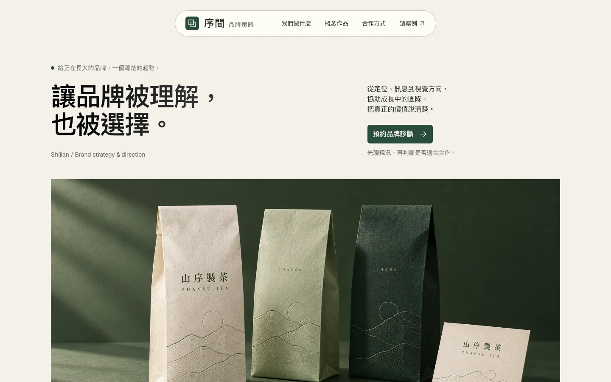
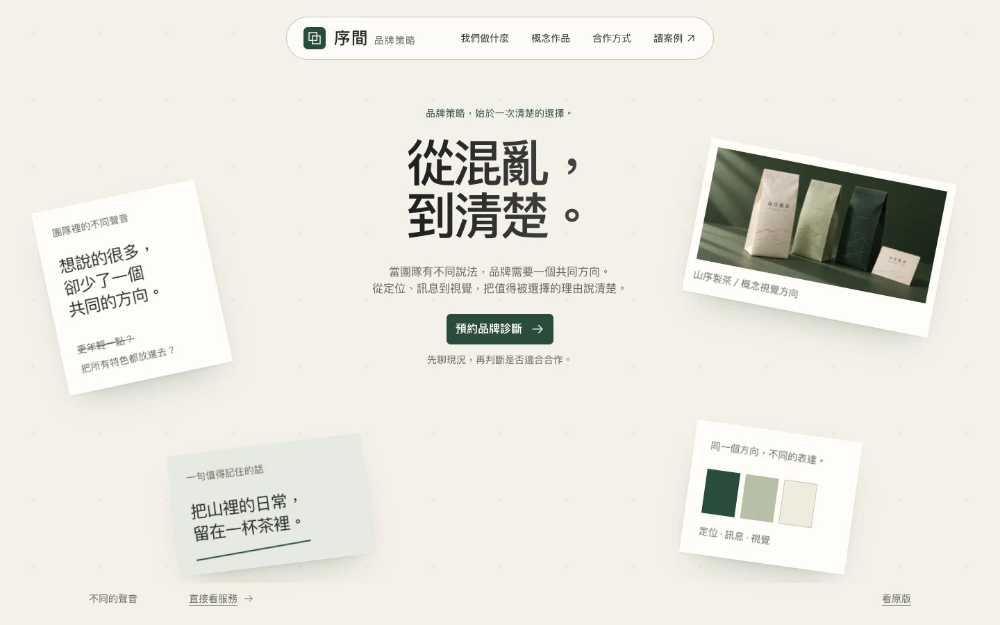
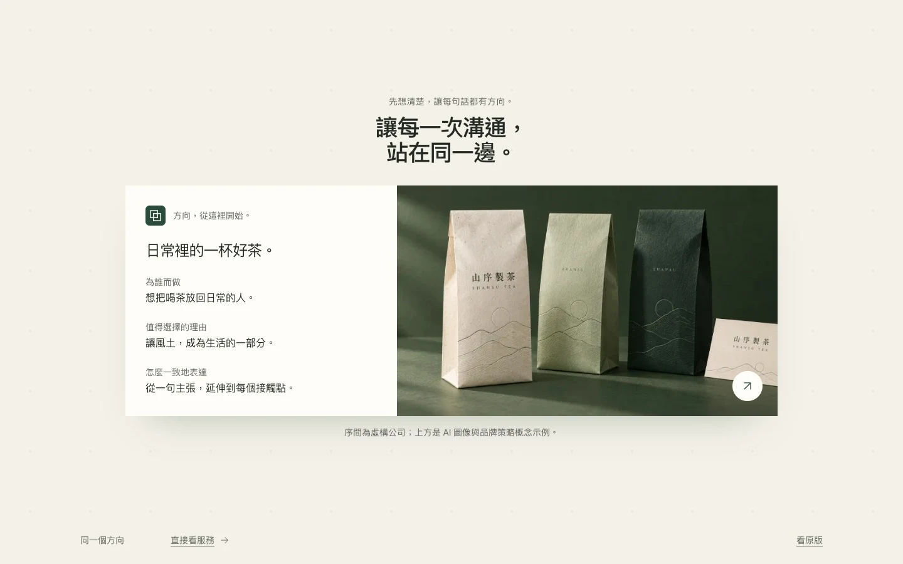
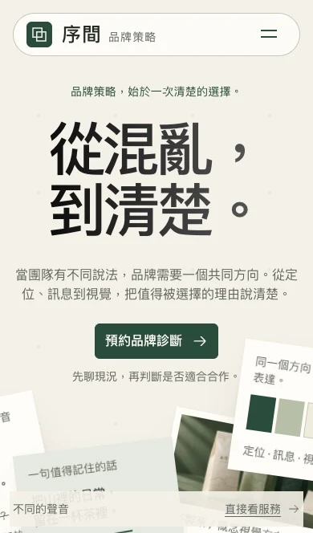
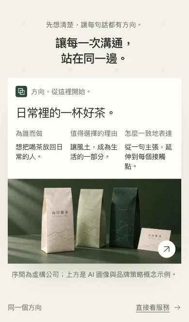

同一家公司，
兩種被記住的方式。
服務、概念案例與詢問流程相同。原版以作品建立判斷依據；新版把「從混亂到清楚」做成首屏裡會發生的事。
體驗新版開啟原版
1 / 紙感與目的
用概念作品、服務交付物與合作條件，讓訪客一步步判斷是否適合合作。
體驗原版
2 / 從混亂，到清楚
標題、策略便箋與作品共享一張工作桌。捲動時紙面收束，形成一份有共同方向的品牌提案。
體驗新版讓敘事，走到一個具體的結果。
新版將「不同的聲音」整理成受眾、選擇理由與一致的表達。你可以自由捲動、倒回查看，或直接跳到服務內容。



序間與作品皆為虛構情境；作品圖像由 AI 生成。減少動態模式會直接呈現文字與整理後的方向板。